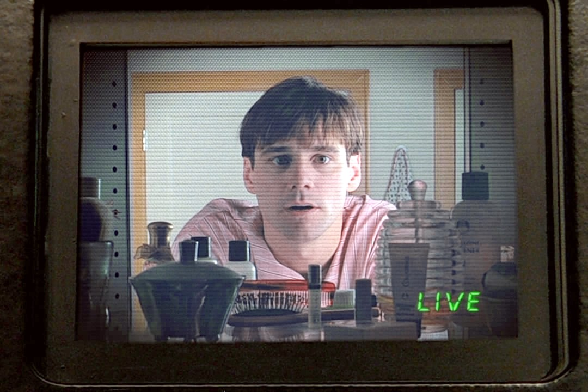
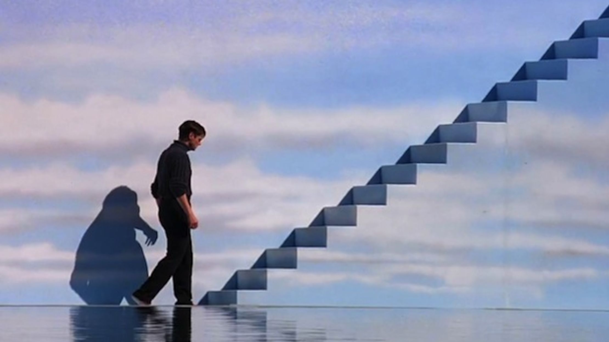

Truman Burbank is the unsuspecting star of The Truman Show, a reality television program broadcast live around the clock worldwide. He has spent his entire life in the seaside town of Seahaven Island—in reality an enormous set visible from space—situated near Hollywood on Mount Lee and equipped with state-of-the-art technology to simulate day and night and weather conditions. There are 5,000 cameras to record Truman's every move, which have gradually grown in number and secrecy as he ages. The producers discourage Truman from leaving Seahaven by instilling in him aquaphobia through the "death" of his TV father in a boating "accident,” and by constantly broadcasting and printing messages of the dangers of traveling and the virtues of staying home. All of Seahaven's other residents, including his friends, his wife and his mother, are actors. Christof, the show's creator and executive producer, seeks to capture Truman's real emotion and human behavior and give audiences a relatable everyman.
Despite Christof's control, he can not predict all of Truman's actions. During his college years, Truman was intended to fall in love with and marry co-student Meryl, but fell for Sylvia, an extra. Sylvia attempted to warn him that his reality is fake before being removed from the show, where Truman is told she moved to Fiji with her father. While Truman went on to marry Meryl, he continues to think about Sylvia. He uses scraps from magazines to recreate her face in secret, and seeks travel to Fiji. Outside of the show, Sylvia has become part of a "Free Truman" campaign that demands the end of the show and Truman's freedom and accuses Christof of making his life worse, which Christof denies.
The show goes on, and when it is beyond its 10,000th day of runtime, Truman starts noticing unusual events: a spotlight falling out of the sky, a radio frequency that precisely describes his movements, and rain that falls only on him. Truman spots a disheveled man and recognizes him as his father, who had snuck back onto the set, but other actors quickly drag the man away. Despite efforts by Meryl and Truman's best friend Marlon to reassure him, Truman becomes even more suspicious about his life. One day, he takes Meryl by surprise by going on an impromptu road trip, but their way is blocked by increasingly implausible emergencies. Meryl begins to break down from the stress as Truman begins to believe she's in on the charade; during an argument she breaks character and is taken off the show. Hoping to bring Truman back to a controllable state, Christof re-introduces Truman's father to the show properly, under the guise of having lost his memory after the boating accident. This helps the show regain the ratings lead with audiences, and Truman seems to return to his routines, except he begins sleeping in his basement.
One evening, the production staff discovers that the sleeping Truman is completely out of their sight. Marlon is sent to check on Truman, finding that he has left an inflatable snowman dummy and a tape recorder playing snoring sounds in his place, and has disappeared through a makeshift tunnel. Marlon breaks character, revealing that Truman is gone, and Christof orders the first transmission cut in the show's history, while a citywide search for Truman is launched. Audiences around the world, including the media, are drawn to this sudden change. Truman is found sailing out of Seahaven, having conquered his fear of water. Christof resumes the broadcast and, after an attempt to fetch Truman and return him to Seahaven fails, he sends a man-made lightning storm to try to capsize the boat. Both network executives and the show's production crew fear that Truman may die on live television, and Christof's bosses and assistants demand that he end the storm, but Christof ignores them. Despite being thrown overboard, Truman manages to persist; realizing he cannot dissuade Truman any further, Christof finally ends the storm.
Truman continues to sail until his boat strikes the wall of the dome. He finds an exit door, but Christof, speaking directly to Truman through a speaker system, tries to convince him to stay, stating there is "no more truth" in the real world and that by staying in his artificial world, he would have nothing to fear. Truman considers this, then states: "In case I don't see you... good afternoon, good evening, and good night," (previously his catch-phrase), takes a bow, and exits. The viewers cheer Truman on, while Sylvia races to greet him. Defeated, Christof's supervisors finally end the program on a shot of the open exit door, and the viewers check their television guides to see what else is on television.